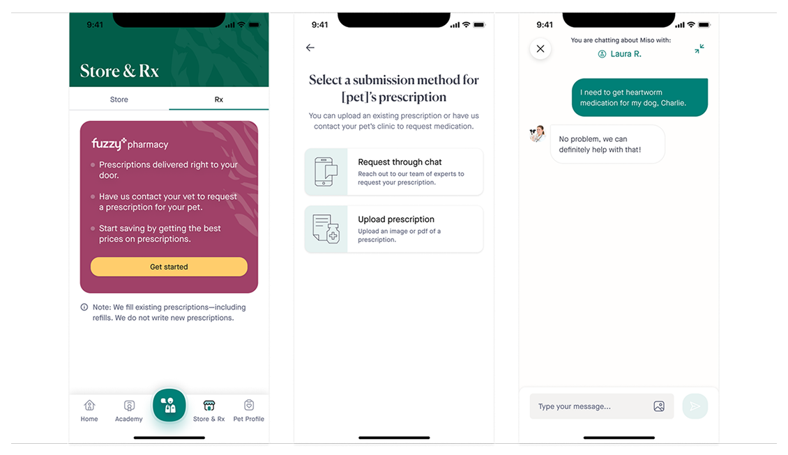

Fuzzy Pharmacy
Finding product market fit with a new product vertical, prescriptions.

The Situation
Fuzzy was expanding beyond virtual veterinary care into prescriptions. The team needed to understand how pet parents thought about medication, how vets and pharmacy operations would support fulfillment, and where the product experience could create trust in a sensitive healthcare workflow.
The A-Z Pet Prescription Internal View
Before designing the customer experience, the team mapped the full prescription journey across product, clinical, and operations touchpoints. This helped identify dependencies, handoffs, and the moments where internal teams needed better visibility.
The prescription experience could not be solved only in the app. The internal workflow needed to support vet review, fulfillment, support, and customer communication.
We aligned around an MVP service model before locking the screens, which made product and operational trade-offs easier to evaluate.
Defining the Core Experience
The customer experience needed to make prescription selection, vet review, and order status feel straightforward. We focused on reducing uncertainty by clarifying what information was needed, what would happen next, and how customers could get help.
We framed the MVP around trust, clarity, and operational feasibility: customers needed confidence, while internal teams needed a workflow they could support at launch.
Adjusting the Purchase Journey
The pharmacy journey had to support a different buying mindset than Fuzzy’s core subscription experience. Customers were often trying to solve an immediate pet health need, so the flow emphasized reassurance, eligibility, and clear next steps.
- Explain how prescription approval and fulfillment works.
- Make medication details and refill expectations easy to understand.
- Clarify when a vet or customer support team member would follow up.
Results & Next Steps
What changed
- The team had a clear MVP journey for a new product vertical.
- Internal dependencies were visible before engineering committed to the customer-facing flow.
- Design and operations could evaluate product-market fit through one shared journey.
The project gave the team a shared understanding of the prescription service model and a product direction that could be tested with customers and operations. It also clarified where the pharmacy experience needed dedicated tooling instead of relying on patterns from the core product.
Results
- Defined the MVP customer journey for Fuzzy’s new pharmacy vertical.
- Aligned product, design, operations, and veterinary stakeholders around the prescription service model.
- Identified key internal workflow needs before scaling the customer-facing experience.
Reflection
Pharmacy was a strong reminder that service design is product design. The customer experience could only be clear if the internal experience, operational handoffs, and clinical responsibilities were also clear.